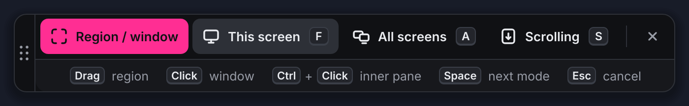
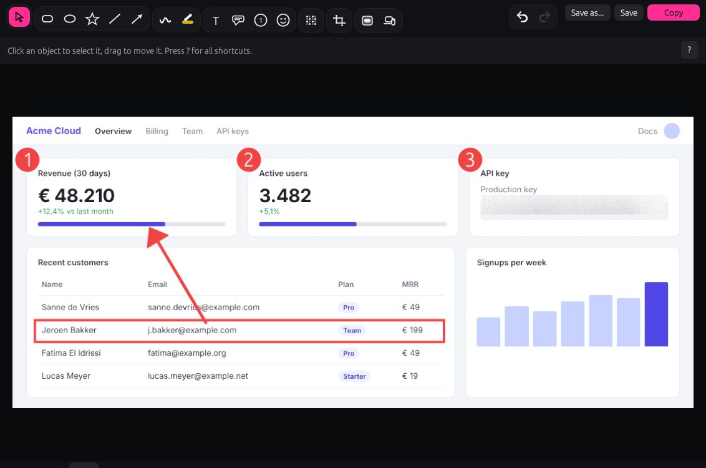
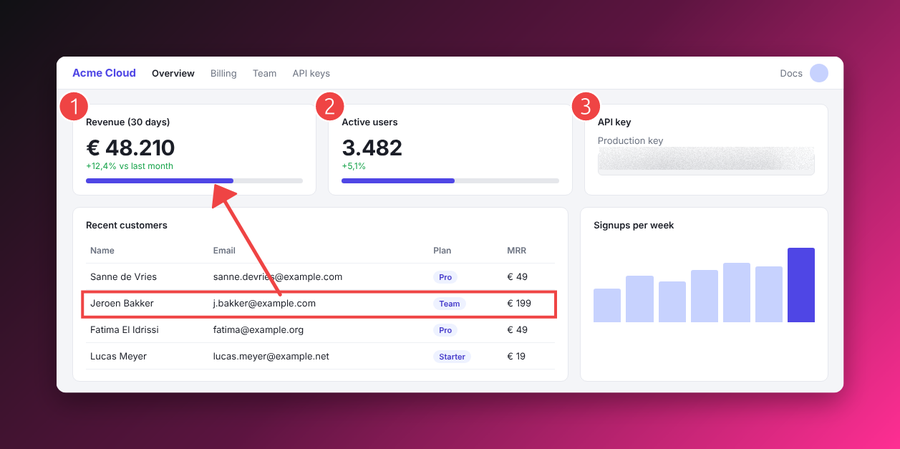
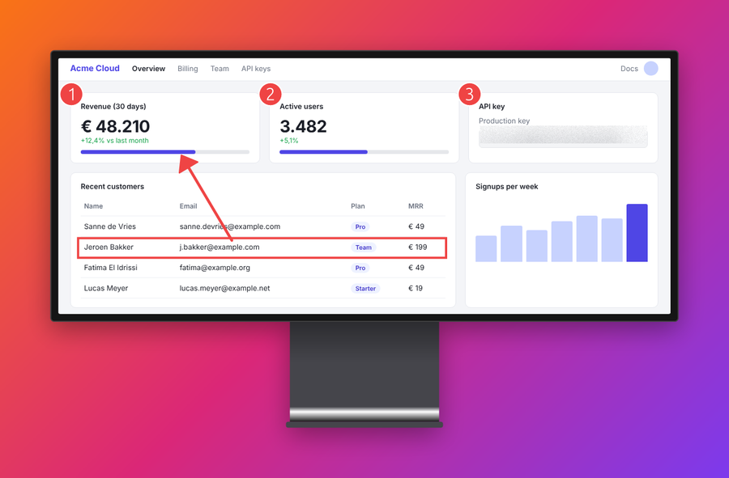
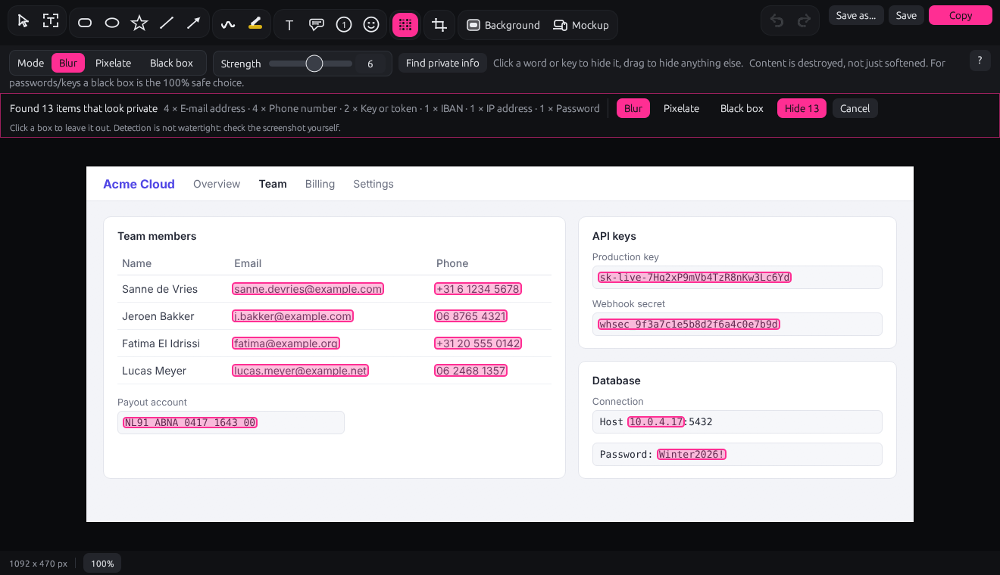
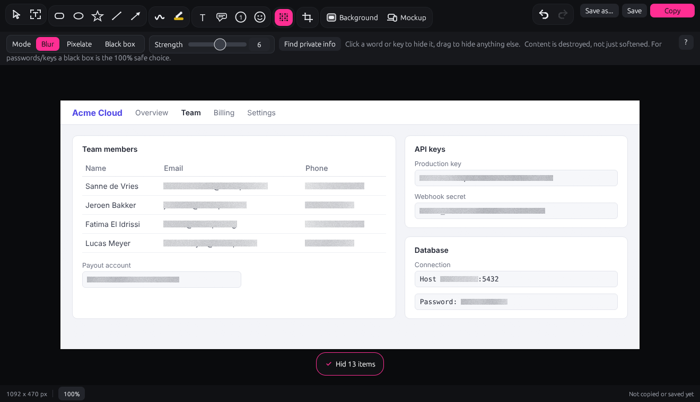
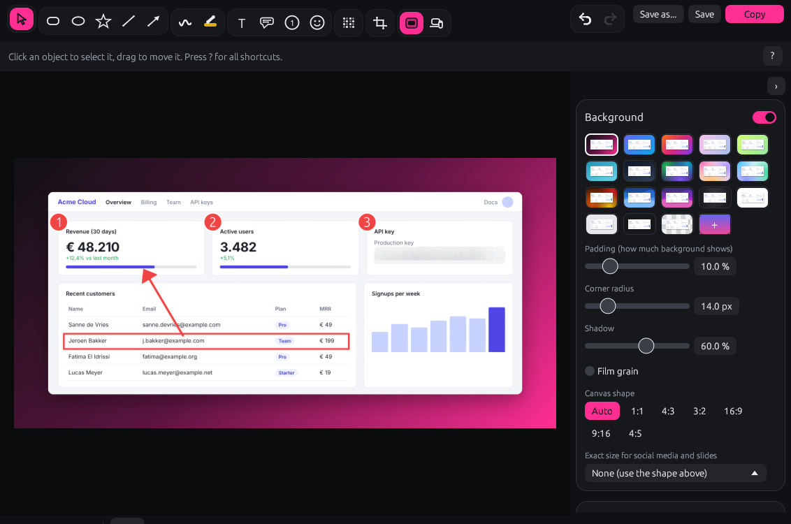
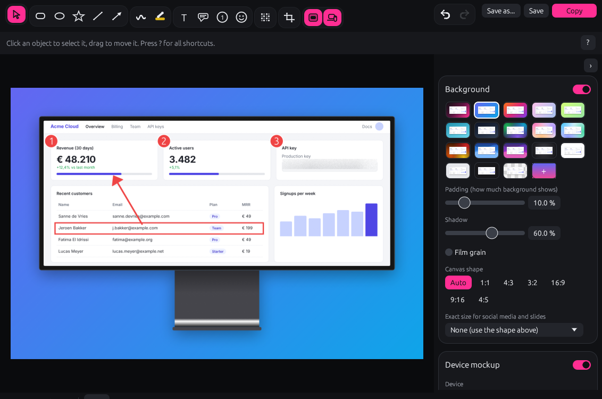
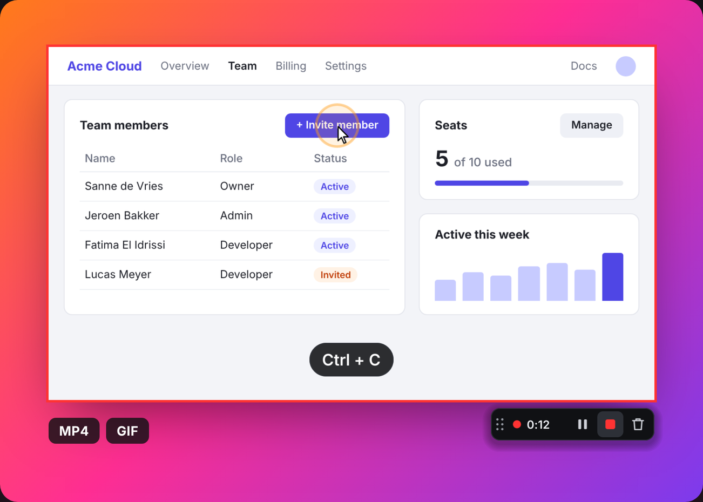

Free and open-source screenshot tool for Windows
Screenshots that look finished the moment you take them.
Capture a region, a window or a whole scrolling page. Mark it up, let Blink find and hide what is private, and put it on a background or a device. Copy text and tables straight off the screen, or record it as MP4 or GIF. One small, native app that starts with Windows and stays out of your way.
Free, open source (GPL-3.0), source on GitHub. No account, no ads, no telemetry. Windows 10 and 11, 64-bit. Which one do I need?
- 7 capture modes including scrolling pages
- Finds private info and hides it for real
- 17 backgrounds and 18 device frames
- Copy text and tables from the screen, offline
- Screen recording to MP4 or GIF
What Blink does
Everything between pressing Print Screen and pressing paste.
Each part is explained below, with screenshots. Pick what you need.
Capture anything
Region, window, inner pane, screen, all screens, or a whole scrolling page. Windows snap to their real edge.
Annotate in seconds
Arrows, boxes, text, numbered steps, callouts and emoji. One key per tool.
Find private info
Blink spots e-mail addresses, phone numbers, IBANs, keys and passwords. You hide them all in one click, with a blur that holds.
Present it
Put the screenshot on one of 17 backgrounds or in one of 18 device frames. Ready for a slide or a post.
Copy text and tables
Point at text on the screen and it is on your clipboard. Tables paste into Excel with every value in its own cell.
Record the screen
MP4 or GIF, with click rings and the shortcuts you press. Trim it before you share.
NewPin it to the screen
Keep a screenshot above your other windows while you work: a value, a design, a set of instructions.
NewFiles where you want them
Name screenshots with the date, the app or a counter, and sort them into folders per month or per app.
Capture
Press one key. Get exactly what you pointed at.
Hover a window and it snaps to its real, visible edge. Drag for a region. Press Space to cycle through the other modes. Your screenshot is a 1:1 copy of your screen pixels, also on mixed-scaling multi-monitor setups.
Seven ways to capture, one overlay
A single selection overlay spans all your monitors, with a magnifier for pixel-precise edges. The mode bar at the top shows the active mode and what the mouse and keys do; click a mode to switch.
- Window edges without the invisible resize border or shadow that Windows adds.
- Works on GPU-rendered apps such as Chrome, Edge and Electron, where copying a window directly often returns black. Blink cuts the window out of a frozen copy of the screen instead.
- Scrolling capture stitches the page together and recognises fixed headers and footers.
- Read QR codes: point at one in the overlay and the label shows what it says. Click to copy it, Ctrl + click to open a web link.
- Include the mouse pointer if you want it (Settings > Capture). In the editor it is a separate object you can move, resize or delete.
- HDR screens (experimental): turn on Tone map HDR screens and bright HDR games, videos and photos keep their detail instead of turning flat white.
- The same overlay also copies text (T) and records (R).

Print Screen, handled properly
On Windows 11 the Print Screen key opens the Snipping Tool. Blink shows for every hotkey whether it is active or taken by another app, and gives you an Override button to take it over.
| Action | Default hotkey |
|---|---|
| Region or window | Print Screen |
| Screen under the mouse | Shift + Print Screen |
| Active window | Alt + Print Screen |
| Scrolling page | Ctrl + Shift + Print Screen |
| Copy text from the screen | Ctrl + Alt + Print Screen |
| Record the screen (again to stop) | Ctrl + Alt + Shift + Print Screen |
| Capture menu | Ctrl + Print Screen |
Every hotkey can be changed.
Edit
Make your point. Hide the rest.
A fast editor that opens straight after the capture. Every tool has a single-key shortcut, and Blink remembers the colour, width and style you used last for each tool.
The annotations people actually use
- Arrows with five head styles, on one or both ends
- Rectangles and ellipses with line, fill and transparency
- Text in bold, italic, underline or strikethrough, with an optional background
- Numbered steps for how-to guides and bug reports
- Shapes, callouts and emoji stamps: star, hexagon and flowchart shapes, a text box with a pointer, and 54 colour emoji that stay sharp at any size
- Highlighter, freehand, line, crop, colour picker with eyedropper, undo and redo
- Hold Ctrl to select and move with any tool

Redaction
Blur that is built to stay blurred
A light Gaussian blur keeps the shape of letters, and that can be partly reversed. Blink first reduces the area to blocks, blurs it three times with a radius that scales with the area, and adds noise. Far too little information is left to reconstruct text.
For passwords and API keys, use the black box. It removes the content completely, and the editor tells you so.
- Blur, pixelate or black box, with adjustable strength
- Click a word, key or e-mail address to hide it. Find private info suggests what to hide (e-mail addresses, phone numbers, IBANs, card numbers, IP addresses, keys and tokens, passwords, BSN), and you confirm. It is a help, not a guarantee.
- What you see is what you export: the editor and the export use the same renderer


Find private info
One click to find what should not be shared.
Before you paste a screenshot into a ticket, a chat or a slide, Blink reads it and marks everything that looks private. You check the suggestions and hide them all in one step.
Blink finds it, you decide
Press Find private info in the redaction tool. Every finding gets a box; click a box to leave it out, pick blur, pixelate or black box, and press Hide. One undo brings everything back.
- E-mail addresses, phone numbers, IP addresses
- IBANs and card numbers, checked with their own checksum (mod 97, Luhn) to keep false alarms down
- API keys, tokens and passwords: well-known key formats, long random strings, and values after labels such as Password: or token =
- Dutch citizen service numbers (BSN), checked with the elfproef
- Or click a single word or key to hide just that one
It is a suggestion, not a guarantee: text recognition can misread a character or miss text in an image. Always give the screenshot a last look.

Read on your PC. Never in the cloud.
Text recognition uses the OCR engine that is built into Windows 10 and 11. It runs on your own PC and works without an internet connection. Blink does not send your screenshot, the text it reads or what it finds to any server: no cloud OCR, no AI service, nothing stored somewhere else.
- Works offline, also on a plane or behind a strict company firewall
- No download and no account: Windows already has the engine
- The same engine powers copy text from the screen and selecting text in the editor
- The code is open source, so anyone can check this

Present
From raw screenshot to something you are happy to post.
Turn on a background, a device mockup, or both. Copy and Save include the frame, at the original resolution.

A background in one click
- 17 backgrounds: gradients, mesh, waves, solid and transparent, plus your own two-colour gradient
- Padding, corner radius, shadow and film grain, each with one slider
- Canvas shapes (1:1, 4:3, 3:2, 16:9, 9:16, 4:5), or an exact size for social media and slides
Or show it on a device
- 16 devices (iPhone, Pixel, Galaxy, iPad, Surface, MacBook, Windows laptops, iMac and monitors), plus a browser window and an app window
- Blink picks the device that fits your screenshot. Fill crops a little to fill the screen, Fit shows everything.
- Devices are drawn as vectors, so they stay sharp at any resolution
- Combine a device with any background

Copy text
Text on the screen is text on your clipboard.
An error message in a dialog, a value in a dashboard, a table in a PDF someone screen-shared: point at it and copy it, instead of typing it over.
Point, click, paste
Press Ctrl + Alt + Print Screen, or T in the capture overlay. Blink reads the screen while you aim and lights up the text it found.
- Click a line to copy it, Ctrl + click for its whole paragraph, or drag over a region
- Tables stay tables. Paste into Excel and every value lands in its own cell; Word, Outlook and Teams make a real table of it. The label says when Blink found one.
- In the editor, select text in a screenshot like in a document (X), and copy or hide it
- Read on your PC by the OCR engine built into Windows: offline, nothing to download, nothing sent anywhere
Record
When a screenshot is not enough, record it.
Press Ctrl + Alt + Shift + Print Screen, or R in the capture overlay, and pick a region, a window or a screen. After a 3-2-1 countdown a small bar next to the area shows the time, with pause, stop and discard. Stop with the same hotkey and you have an MP4 or a GIF.

Clicks and shortcuts, so people can follow along
- MP4 or GIF, at 15 or 30 frames per second
- A ring where you click (orange for the left button, blue for the right), and if you want a soft circle that follows the pointer
- Keys you press, if you switch it on: shortcuts like Ctrl + C, F5 or Enter, but not what you type, so passwords stay out of the video
- The pointer, clicks and keys are added when you save, so you can still switch each of them off
- Smooth on 4K. On a screen at 200% scaling or more, Blink records at half size, which looks like the same screen at 100%: files four times smaller. Choose Full resolution to keep every pixel.
Share it straight away
A notification after each recording says how long and how large it is, with Edit, As GIF and Copy. Copy puts the file itself on the clipboard: paste it into Teams, Slack, an e-mail or a folder. Recordings go to Videos\Blink.
Trim before you send
Edit opens the clip window. Play it, drag the handles to cut off the start and the end, switch the pointer, clicks and keys on or off, and save as MP4 or GIF. It shows roughly how large the file will be before you save.
What it does not do (yet)
No sound, one monitor at a time, and a window is recorded as the area it had when you started. Blink uses the video encoder that is part of Windows, so the download hardly grew; Windows N editions need the Media Feature Pack.
After the capture
Keep it in view. Find it again later.
Blink does what you want after each screenshot: open the editor, copy, save, pin it, or ask you with a small menu at the mouse. The notification has Edit, Save, Save as and Pin.
Pin a screenshot to the screen
Choose Pin on the notification or press Ctrl + P in the editor. The screenshot appears at once in a small window without a frame that stays above your other windows, right where you took it. Keep a value, a design or instructions in view while you work.
- Drag to move, drag an edge or Ctrl + scroll to resize
- Make it see-through to work on what is below
- Copy, Save as or Edit from its bar, Esc closes it
File names and folders your way
Build the name from variables such as {date}, {time}, {app} (the program you captured) and {n} (a counter). A \ makes a folder. Or pick a ready-made pattern.
History in the tray
Your latest screenshots are under History in the tray menu, each with a small preview: click one to copy or edit it again. By default Blink keeps the last 10 for 24 hours, only on your PC. You choose how many and how long, or turn it off.
Save as PNG, JPEG or WebP. Open screenshots folder selects the newest one for you.
Built in Rust
Light when idle. Quick when you need it.
Blink is written in Rust and compiles to native Windows code: no Electron, no browser engine, no runtime to install. The installer is about 3 MB; the whole app is one exe of about 9 MB.
Tiny always-on part
The tray app, hotkeys, capture and overlay are plain Win32 with no UI framework. The editor starts as its own process only when you need it, so an editor crash never takes the tray with it.
Installs without admin rights
Per-user install, nothing machine-wide. There is also a portable exe that runs without installing. Start with Windows is optional.
Your language, your theme
Blink speaks English, Dutch, German, French, Spanish and Portuguese and comes in a dark and a light theme, or follows the Windows setting.
Native and memory-safe
Rust gives native speed without a garbage collector, and its compiler rules out most memory bugs before Blink ever runs. That matters for an app that runs all day and reads your screen.
Your screenshots stay on your PC
No account, no cloud, no analytics. History is kept only on your PC: by default the last 10 screenshots for 24 hours, and you choose how many and how long. The only network request is the daily update check on GitHub, and you can turn it off.
Compare
How Blink compares
Every tool here is good at something. This is where Blink is strong, and where it is not.
| Feature | Blink | Snipping Tool | Greenshot | ShareX | Flameshot | Snagit |
|---|---|---|---|---|---|---|
| Price | Free | Free, built in | Free | Free | Free | $39 per year |
| Open source | GPL-3.0 | No | GPL-3.0 | GPL-3.0 | GPL-3.0 | No |
| Platforms | Windows | Windows | Windows | Windows | Windows, macOS, Linux | Windows, macOS |
| Window capture that snaps to the app | Yes | Yes | Yes | Yes | Partly | Yes |
| Scrolling capture | Yes | No | LimitedInternet Explorer only | Yes | No | Yes |
| Arrows, shapes, text, highlighter | Yes | Yes | Yes | Yes | Yes | Yes |
| Numbered steps | Yes | No | Yes | Yes | Yes | Yes |
| Speech bubbles / callouts | Yes | No | Yes | Yes | No | Yes |
| Emoji stamps | Yes | Yes | No | Yes | No | Stamps |
| Blur and pixelate | Yes | Notext redaction via OCR | Yes | Yes | Yes | Yes |
| Background, padding, rounded corners, shadow | Yes17 presets | No | No | Yessince 2026 | No | No |
| Device mockups | Yes18 frames | No | No | No | No | No |
| Text recognition (OCR) | Yesoffline, built into Windows | Yes | Yes | Yes | No | Yes |
| Screen recording / GIF | YesMP4 and GIF, no sound | Yes | No | Yes | No | Yes |
| Upload to the cloud | Noby design | No | Plugins | Many services | No | Yes |
Checked in November 2026 against each tool's own website, changelog and documentation. Tools change quickly: if something here is out of date, open an issue and we fix it.
Pick Blink if
you want screenshots that are ready to share: annotated, safely redacted, and on a background or device, without a second app. And you want a tool that stays small: it records the screen to MP4 or GIF too, but does not try to do everything.
Pick ShareX if
you need everything: screen recording with sound, uploads to dozens of services, automation workflows. It is more powerful than Blink, and busier.
Pick Flameshot or Snagit if
you also work on macOS or Linux (Flameshot is free on all three), or you need a commercial tool with video and support (Snagit).
Download
Get Blink
Free, forever. The newest version is always on GitHub Releases, with its changelog and SHA-256 checksums.
Windows
AvailableWindows 10 and 11, 64-bit. No admin rights needed.
- Installer, for most people: installs for your user only, starts with Windows (you can switch that off), updates itself with one click.
- Portable: one .exe you run from any folder, nothing to install. It does not start with Windows unless you turn that on, and an update installs the regular version. Settings are still kept in
%APPDATA%\Blink.
macOS
Not yetThe capture part of Blink is written directly against Windows. A macOS version needs its own capture, hotkey and tray code, and is on the roadmap.
Read the planLinux
Not yetThe editor already runs on Linux; capturing, hotkeys and the tray do not. X11 is the first target. Wayland limits what any screenshot tool can do, so it comes after.
Read the planFAQ
Questions people ask first
Is Blink really free?
Yes. Blink is open source under the GNU General Public License v3.0. There is no paid version, no trial and no feature held back. If it saves you time, you can support it with a small donation, but you do not have to.
Windows says the publisher is unknown. Is that safe?
The installer is not code-signed yet, so Windows SmartScreen warns about it the first time. Choose More info, then Run anyway. Every release is built in public by GitHub Actions from the source code in the repository, and GitHub lists the SHA-256 checksum of each file, so you can check exactly what you downloaded. Signing is on its way, see the code signing policy.
Installer or portable: which one should I take?
The installer, unless you cannot or do not want to install software. It installs for your user only (no admin rights), starts Blink with Windows and installs updates with one click. The portable .exe runs from any folder without installing; it can start with Windows too if you turn that on in Settings. It checks for updates as well, but installing one puts the regular version on your PC. Both keep their settings in %APPDATA%\Blink, so the portable version is not made to run from a USB stick on other PCs.
Does Blink upload my screenshots anywhere?
No. Screenshots and recordings are kept in memory, in your clipboard, in History on your PC, or in the folder you choose. The only network request Blink makes is a daily check for a new version on GitHub, which you can turn off.
Where is the text in my screenshots read?
On your own PC. Copying text and Find private info use the OCR engine built into Windows, which works offline. Blink sends no image and no text to any server or AI service for it.
Does screen recording record sound?
Not yet. Recording makes a video without sound, of one monitor at a time. That covers how-tos, bug reports and short demos; if you need a voice-over, a tool like ShareX or OBS fits better for now.
Will a recording show what I type?
No, unless you ask for it. Showing keys is off by default. When you switch it on, the default is Shortcuts and clicks only: combinations like Ctrl + C and keys like F5 or Enter, but never what you type, so passwords stay out of the video. Typed text is not even written to disk in that mode.
Print Screen still opens the Snipping Tool.
That is a Windows 11 setting. Turn off Settings, Accessibility, Keyboard, Use the Print Screen key to open screen capture. Blink also shows the status of each hotkey and can override a combination another app has taken.
What are the limits of scrolling capture?
It scrolls with simulated mouse wheel steps and stitches the frames together. It works in browsers, editors, chat apps and File Explorer. It can fail on content that changes while it scrolls, such as video, animations, or lazy-loaded content that shifts. In that case Blink stops and gives you what it captured so far.
Is there a macOS or Linux version?
Not yet. Blink runs on Windows 10 and 11 (64-bit). The editor is portable, but capturing, hotkeys and the tray icon are written for Windows. The plan for macOS and Linux explains what a port needs.
What happens to my settings if I uninstall?
The uninstaller removes the app but leaves your settings and your screenshots in place.
I found a bug or I miss a feature.
Open an issue on GitHub. Pull requests are welcome too; CONTRIBUTING.md explains how to build Blink.
Support Blink
Free to use. Kept alive by people who use it.
Blink is made in spare time. A star on GitHub helps others find it; a coffee pays for the time it takes to keep it working.